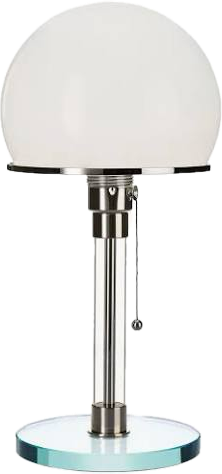

Die Idee Bauhaus
Radikale Funktionsanalyse
Geometrische Dekonstruktion
Zweckmäßigkeit und das menschliche Maß
Materialgerechtigkeit
Industrielle Serienfertigung
Kernfrage: Was muss das Objekt physikalisch leisten?

Wagenfeld-Leuchte WG 24